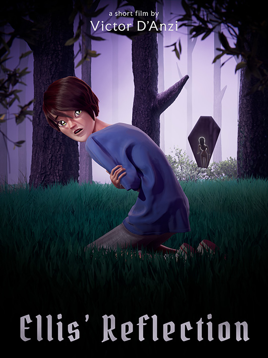
Ellis’ Reflection is a two-minute 3D animated short film by Victor D’Anzi.
When Ellis confronts her reflection in the mirror, she sees a distorted image of herself that triggers an emotional freefall. Is there any escape from her inner demons?
The film uses an expressive painterly style to propel the psychological drama as Ellis struggles with insecurities, negative body image and self-criticism. It’s a story of dark truth - and hope.
New York Shorts International Film Festival
Oct 10th 2025 • New York, NY, USA (World Premiere)
37th Girona Film Festival
Nov 4-8 • Girona, Spain (European Premiere)
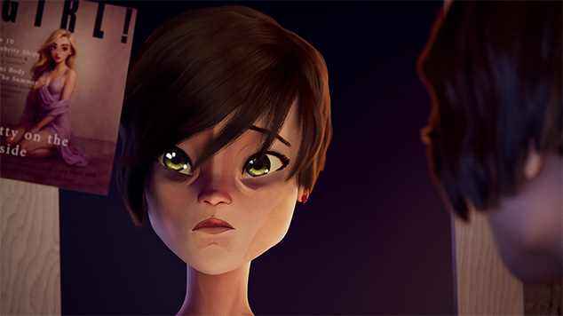
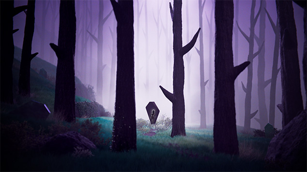
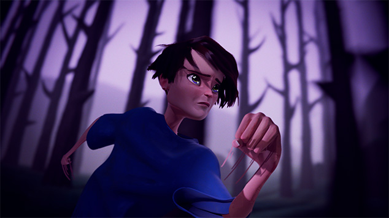
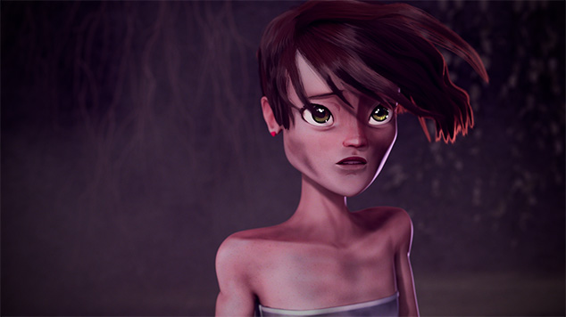
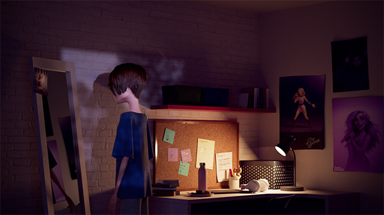
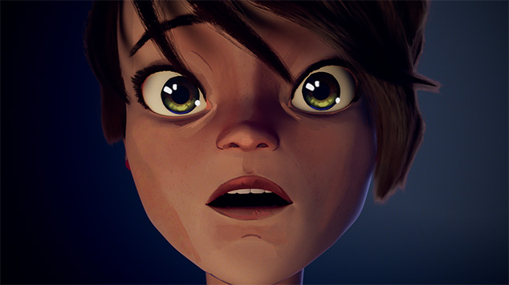
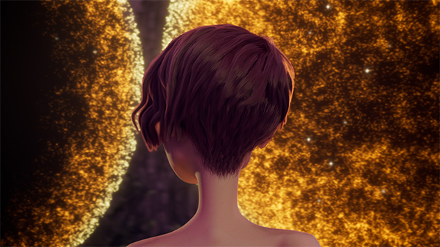
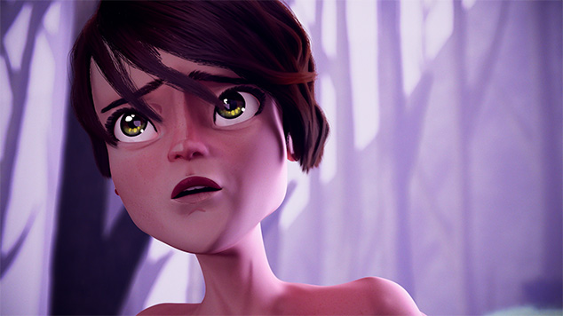
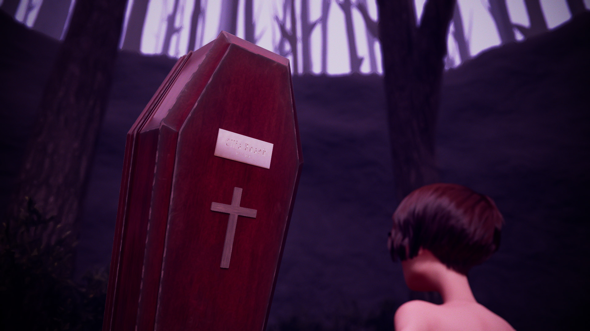
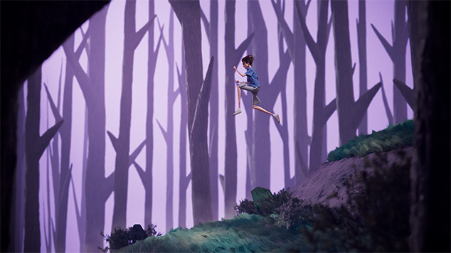
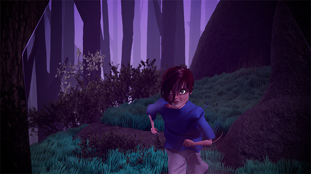
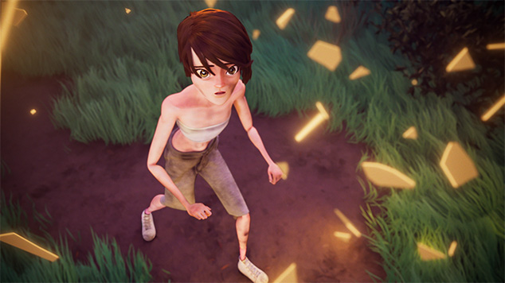
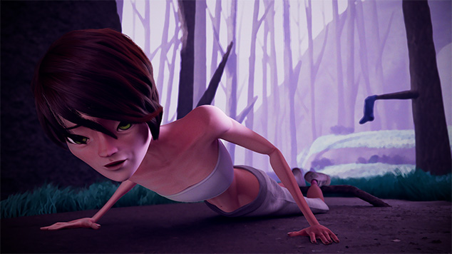
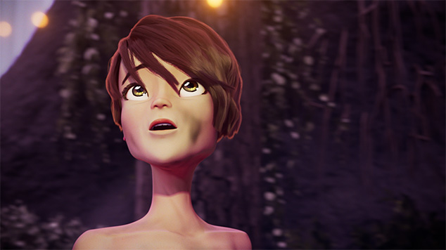
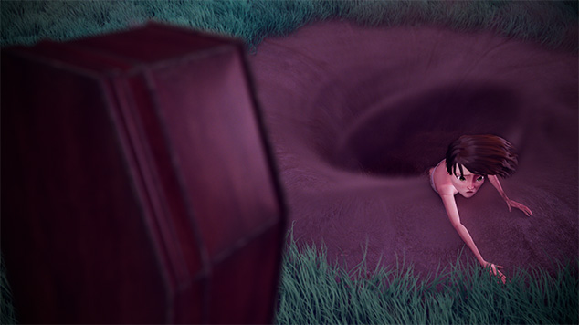